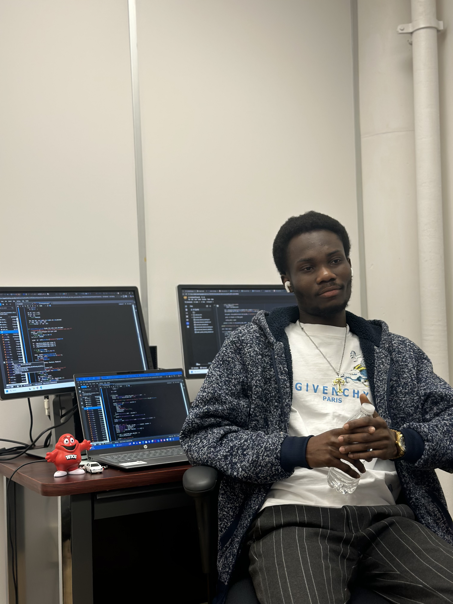

Education, research experience, publications, skills, and leadership — all in one place.

GPA: 4.00 / 4.00 · Department of Earth, Environmental & Atmospheric Sciences
Thesis: Climatological & Future Projections of Severe-Storm Environments, Ohio River Basin
Advisor: Dr. Xingang Fan · NSF EPSCoR CLIMBS Project
Second Class Upper Division · CWA: 65.87%
Final Year Project: Historical Heatwave Analysis — Ghana · Score: 89/100 (A)
Supervisor: Dr. Yamba Edmund
Strong grades: Statistical Climatology (A), Aviation Met (A), Project II (A), Tropical Met (A), Atmosphere & Ocean Climate Processes (A), Python for Scientific Computing (A)
Led the science and technology portfolio of the student association, organizing academic workshops and representing the department in inter-departmental science activities.
Use your browser's print function to save this page as a PDF, or contact me directly for a formatted academic CV.